E-Horizon Studio
Gaming · Tech · Studio

Jefferson Peres
Marca Pessoal

Neetech
Tecnologia · Suporte Técnico

Plume Care
Cuidados com a pele · Skin care

BR Bike
Mobilidade Elétrica · Sustentabilidade

Solstício
energia solar · sustentabilidade